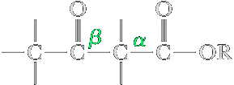
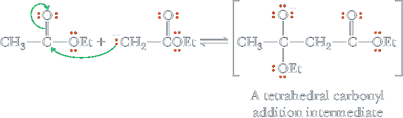
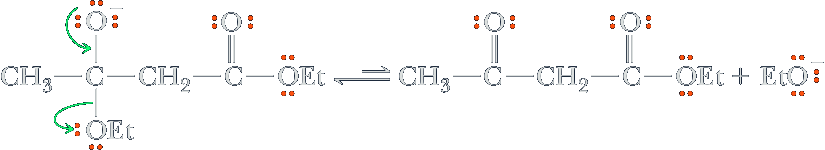
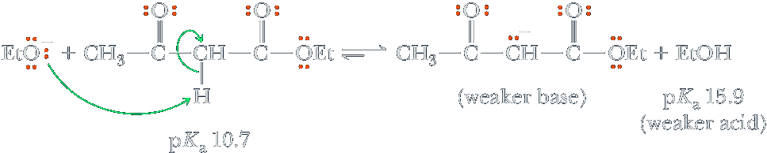
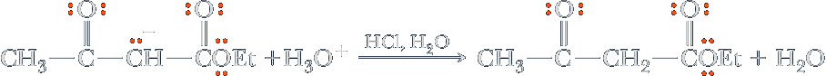
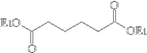
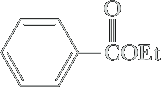
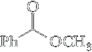
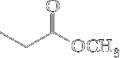
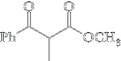

Claisen and Dieckmann Condensations
We described reactions of esters, all of which take place at the carbonyl carbon and involve nucleophilic acyl substitution by an addition/elimination. In this section, we examine a second type of reaction characteristic of esters, namely one that involves both formation of an enolate anion and its participation in nucleophilic acyl substitution. One of the first of these reactions discovered is the Claisen condensation, named after the German chemist Ludwig Claisen (1851–1930).
A Claisen condensation is illustrated by the reaction of two molecules of ethyl acetate in the presence of sodium ethoxide followed by acidification to give ethyl acetoacetate.
| 2 |  Ethyl ethanoate Ethyl ethanoate(Ethyl acetate) | 1. EtO−Na+ ⟶ 2. H2O, HCl |  Ethyl 3-oxobutanoate Ethyl 3-oxobutanoate(Ethyl acetoacetate) | + | EtOH Ethanol |
As this example illustrates, the product of a Claisen condensation is a β-ketoester.
Step 1: Deprotonation of Ester α-carbon to given an ester enolate.
The first steps of a Claisen condensation bear a close resemblance to the first steps of an aldol reactions Like, aldol reaction, Claisen condensations require a base. Aqueous bases, such as NaOH, however, cannot be used in Claisen condensations because they would bring about the hydrolysis of the ester. Rather, the bases most commonly used in Claisen condensations are nonaqueous bases, such as sodium ethoxide in ethanol and sodium methoxide in methanol.
Step 2: Attack of enolate on a second equivalent of ester.
Step 3: Elimination of RO−: Collapse of the tetrahedral carbonyl addition intermediate and ejection of ethoxide ion gives a β-ketoester.
Step 4: Take a proton away. The position of equilibrium for Steps 1–3 lies very much on the side of starting materials. The overall condensation, however, is driven to completion by the acid-base reaction between the β-ketoester (the stronger acid) and ethoxide ion (the stronger base) to give ethanol (the weaker acid) and the anion of the β-ketoester (the weaker base).
Overall, the Claisen condensation involves consumption of a stronger base, in this case ethoxide, and creation of a weaker base, the resonance-stabilized eno late anion of the β-ketoester. One molecule of the original base is consumed for every two molecules of ester that react. This is in contrast to an aldol reaction, in which base is catalytic (not consumed).
Step 5: Add a proton. The chemist then opens the flask and adds mild acid to protonate the enolate anion giving the β-ketoester.
From an analysis of this mechanism, we see that the structural feature required for a successful Claisen condensation is an ester with two α-hydrogens, one to form the initial enolate anion and the second to form the enolate anion of the resulting β-ketoester.
Dieckmann Condensation
An intramolecular Claisen condensation of a dicarboxylic ester to give a five- or six- membered ring is given the special name of Dieckmann condensation. In the presence of one equivalent of sodium ethoxide, for example, diethyl hexanedioate (diethyl adipate) undergoes an intramolecular condensation to form a five-membered ring.
| Diethyl hexanedioate (Diethyl adipate) | 1. EtO−Na+ ⟶ 2. H2O, HCl |  Ethyl 2-oxocyclo-pentanecarboxylate Ethyl 2-oxocyclo-pentanecarboxylate(racemic) | + | EtOH Ethanol |
The mechanism of a Dieckmann condensation is identical to the mechanism we have described for the Claisen condensation. An anion formed at the α-carbon of one ester group adds to the carbonyl of the other ester group to form a tetrahedral carbonyl addition intermediate (make a bond between a nucleophile and an electrophile). This intermediate ejects ethoxide ion to regenerate the carbonyl group (break a bond to give stable molecules or ions). Cyclization is followed by formation of the conjugate base of the b-ketoester, just as in the Claisen condensation (take a proton away). The β-ketoester is isolated after acidification with aqueous acid (add a proton).p
Crossed Claisen Condensations
In a crossed Claisen condensation between two different esters, each with two α-hydrogens, a mixture of four b-ketoesters is possible; therefore, crossed Claisen condensations of this type are not synthetically useful. Such condensations are useful, however, if appreciable differences in reactivity exist between the two esters, as for example when one of the esters has no α-hydrogens and can function only as an enolate anion acceptor. Following are four examples of esters without α-hydrogens.
| Ethyl formate | Diethyl carbonate (Diethyl adipate) |
Diethyl ethandioate (Diethyl oxalate) | Ethyl benzoate |
Crossed Claisen condensations of this type are usually carried out by using the ester with no α-hydrogens in excess. In the following illustration, methyl benzoate is used in excess.
| Methyl benzoate | + | Methyl propanoate | 1. CH3O−Na+ ⟶ 2. H2O, HCl | Methyl 2-methyl-3-oxo-3-phenylpropanoate (racemic) |